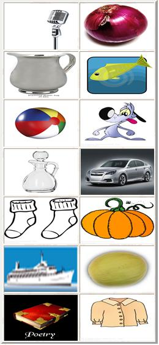

Steps to Follow

Some pictures representing objects appear on the screen.
These objects are alike 2 by 2.
Pair these objects to form different couples.
To select an object,
click on it.
To pair 2 objects, click on them one after the other.
To undo the last selection, click on the “undo” button.
To clear all selections, click on the “clear” button.
Time is kept as the exercise appears.
Time count ends as you make the last pairing.